★ 领克的路径证明，当品牌建设超越单纯的营销技巧，真正扎根于用户生活方式与时代趋势，就能在全球化竞争中勾勒出属于中国品牌的成长轨迹
在全球数字化浪潮中，品牌力越来越成为企业在市场竞争中脱颖而出的关键。它不仅能帮助企业实现产品差异化、降低价格敏感，更能增强消费者忠诚度、提升市场价值。领克作为吉利、沃尔沃和吉利控股合资打造的全球新高端品牌，短短几年成绩亮眼，尤其是互联网时代下的品牌力塑造颇具标杆意义。而这份品牌力的构建，也深深融入了领克的出海征程——接下来，我们就来看看它如何凭借独特的品牌打法走向全球。
引言
在产品同质化日益加剧的市场环境下，消费者对个性化与品牌价值的追求愈发显著，品牌力作为企业构建竞争优势的核心，正成为市场角逐的关键所在。
何为品牌力？有观点将其定义为产品功能属性与消费者情感属性的平衡，也有观点强调其是企业品牌在市场中的竞争力，能够为客户与厂商双向增进价值。从消费者视角来看，品牌力是影响购买决策的无形力量，由品牌商品、品牌文化、品牌传播和品牌延伸共同构成。概括而言，决定全球化品牌的品牌力主要包含三个核心因素：有意义——即品牌与消费者形成情感连接并满足其需求，差异化——即品牌具备独特性与潮流引领性，显著性——即品牌在消费者购买决策时能够占据优先唤起的位置。
互联网与数字经济的兴起，为品牌力构建带来新的机遇与挑战。在互联网环境中，品牌与消费者的互动更加频繁多元，呈现出 “短路径”“多触点”“可量化” 的特征。大数据技术提供了前所未有的洞察力，帮助企业深入理解消费者行为与市场趋势，从而跟踪品牌表现、预测需求偏好。这要求企业必须顺应互联网时代的新趋势，重新审视品牌建设的模式与组织架构。

图1：数字化驱动下的完整品牌力建设框架
领克汽车正是这一背景下崛起的典型代表，它借助互联网时代的传播特性构建起强大的品牌影响力。其品牌理念与实践高度统一，将产品质量与品牌形象紧密结合，巧妙运用打造全球品牌力的三大核心因素——以情感共鸣连接用户需求，以独特基因塑造差异化识别，以高频触达强化决策优先级，在激烈的全球市场竞争中脱颖而出。
领克的互联网品牌力策略分析
领克汽车公司概况
创立于2016年的LYNK&CO（领克）汽车是一个融合欧洲技术、设计，实现全球制造和全球销售的全球新高端汽车品牌，其诞生标志着吉利控股集团与沃尔沃汽车在技术合作和资源共享方面迈出的重要一步。 领克品牌秉承“生而全球，开放互联”的理念，以及“个性、开放、互联”的品牌价值观，拥有与生俱来的全球化基因。作为新兴车企，领克在激烈的出海赛道竞争中逐渐展现出“领跑”姿态。
领克汽车2023年全年累计销量超220,250台，同比增长22.27%；而在2023年上半年，海外出运量为16972辆，新能源车型占比高达96%，位列欧洲中高端新能源车型销量排行榜第三。在《2023年中国全球化品牌50强》榜单中，领克位列第27位，超越众多新势力品牌，成为榜单中最年轻的中国品牌。
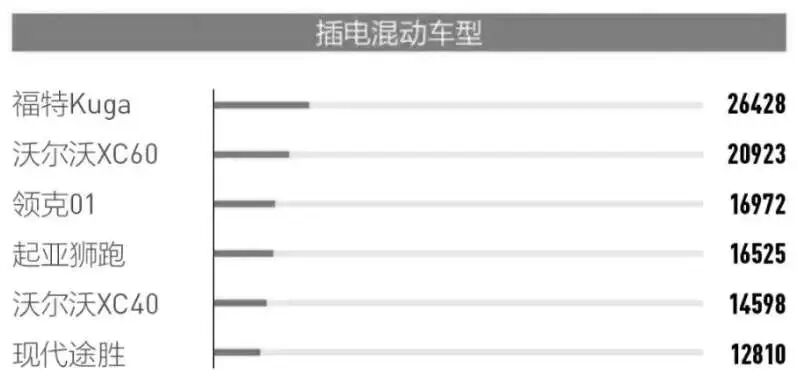
图2:2023上半年欧洲中高端新能源车型销量排行榜（单位：辆）
领克致力于为全球年轻的都市人群打造汽车，将互联网思维与传统汽车工业相融合，引领出行方式向个性化、开放性和互联性转变。其成功不仅在于其产品和技术的创新，还在于其基于互联网思维对市场趋势的敏锐洞察和对消费者需求的深刻理解，这具体表现在产品设计、渠道模式、服务体系构建等几个方面。面对未来，领克将继续以其独特的品牌理念和创新精神，在全球汽车市场中占据一席之地，利用互联网持续推动品牌的全球化发展。
领克汽车的互联网品牌力塑造策略
在当今数字化时代，品牌力的构建不再局限于传统的广告和营销手段。领克汽车，作为一家新兴的全球化汽车品牌，深刻理解互联网的力量，并将其作为塑造品牌力的核心工具，始终秉承着“高价值，高品质”的营销战略。接下来我们将探讨领克汽车如何利用互联网的力量，通过意义打造、差异化和显著性三大品牌力策略，塑造其独特的全球品牌形象。
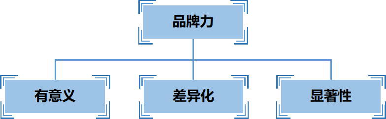
图3：决定品牌力的三大要素
意义打造策略
领克在借助互联网进行品牌意义打造上，通过情感连接和需求满足两大维度，成功地塑造了一个具有独特魅力的汽车品牌。该品牌以汽车运动为标签，与领克的热情活力、热爱生活、热爱体育的精神气质完美地融合在一起。
在与消费者通过网络建立情感联系方面，领克采取了三个方面的措施：
第一，领克深耕社交媒体平台与消费者建立情感联系。除了社交媒体平台上发布与年轻人生活方式相关的内容，领克还积极参与各类潮流文化活动，如音乐节赞助、艺术展览合作等，将品牌与年轻人的兴趣爱好紧密结合，让消费者感受到领克品牌的精神和态度；并鼓励用户参与品牌活动，如用户设计大赛、用户故事分享等，让用户成为品牌共创者，增强用户参与感和归属感。
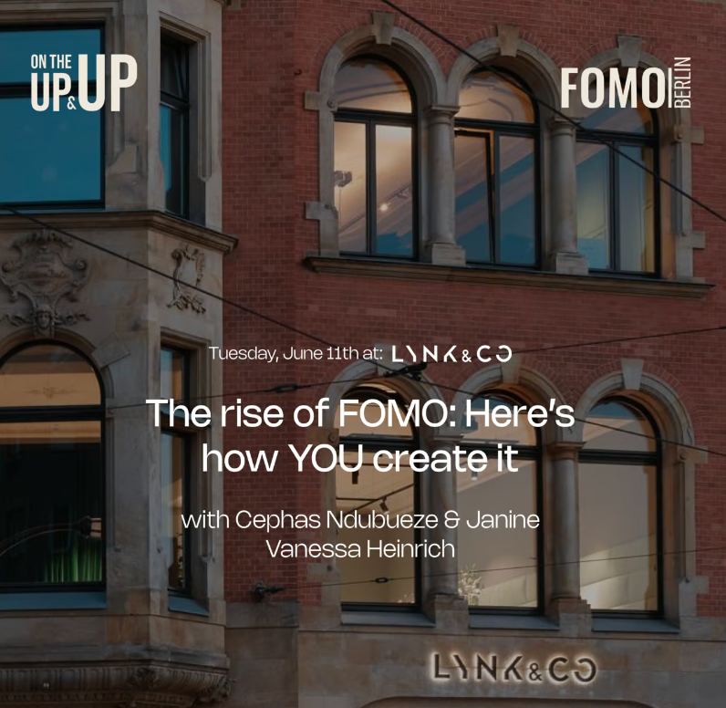
图4：领克与FOMO进行艺术展览合作
第二，领克还通过网络上的“订阅制”商业模式，欧洲人可以以每月500欧元的价格注册会员，通过Lynk&Co APP共享车辆，并提供一系列增值服务，如充电、维修等，打破了传统的汽车购买方式，让用户可以根据自己的需求灵活选择用车时长和车型，满足都市年轻态人群个性、开放、互联的用车需求，快速融入当地“生态圈”，这种模式不仅提供了新颖的用车体验，也帮助领克实现了由汽车制造商向出行服务商的角色转变。
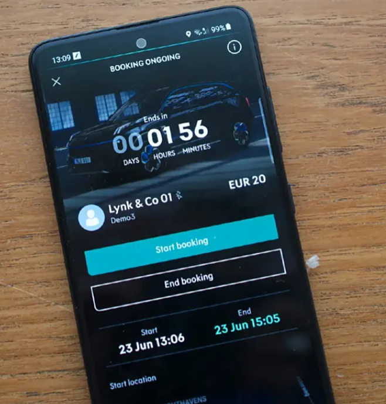
图5：领克“订阅制”共享汽车APP页面
第三，领克与众多时尚品牌合作，在官网上推出联名款产品，将汽车与时尚完美结合，吸引更多年轻消费者的关注。由此可见，领克汽车深刻地意识到，要为年轻一代提供更多的产品与服务，更多地将其作为一种生活方式，通过网络融入到当代的年轻人的生活之中,而不仅仅是单一的汽车品牌。
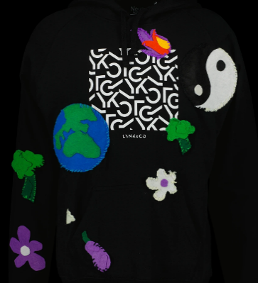
图6：领克与Revibe合作推出的帽衫印花
在与消费者通过网络满足消费者需求方面，领克打造了一个以用户为中心的互动平台——CO:LAB，让用户可以提出关于品牌产品、汽车、环保等领域的问题，彼此分享经验、互相帮助，满足用户对社区和知识共享的需求。
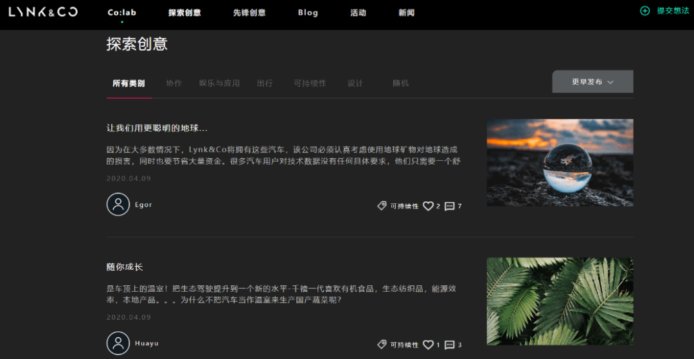
图7：LYNK&CO官网Co:lab用户分享经验
通过多元化的互动形式、主题活动和意见反馈机制，CO:LAB社区实现了用户与品牌之间的深度互动，提升了用户对品牌的忠诚度。同时，社区产生的海量用户数据为领克的产品研发和服务改进提供了宝贵参考，助力品牌实现持续创新CO:LAB社区的成功案例表明，通过构建用户共创平台，汽车企业可以通过网络更深入地了解用户需求，提升品牌影响力，并最终实现商业成功。
差异化策略
领克汽车在激烈的汽车市场竞争中脱颖而出，其成功秘诀之一在于其在互联网上采取的独特品牌差异化策略。本节将深入探讨领克是如何通过满足独特性、潮流性的差异化策略，在激烈的市场竞争中建立起独特的品牌地位。
在独特性方面，领克通过引入“订阅制”和“share”功能，打破了传统汽车行业的固有模式，为消费者提供了更加灵活、便捷的用车方式。
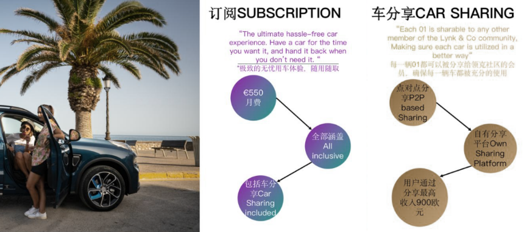
图8：领克“订阅制”与“share”功能介绍
基于LYNK&CO App应用，车主端可以开启Share（车分享）功能，选择将自己的汽车在闲置时分享给其他会员使用，用户端可以在手机上查看附近是否有处于闲置状态的车辆，协商一致后于平台操作即可使用车辆，进而将汽车利用率最大化。
该服务不仅帮助月费订阅车主获得额外收益减少使用成本，还可以帮助其他免费注册的订阅会员或公司组织满足便捷汽车租赁的需求，比起单一的订阅制商业模式涵盖的服务内容更加丰富。更重要的是，软件体验能够强化用户黏性，延长订阅时间，并相对削弱订阅制管理复杂的弊端。
“订阅制”满足了年轻一代对个性化、按需用车的需求，而“share”功能则促进了车辆资源的共享，体现了领克对共享经济的积极响应。更重要的是，订阅数据为领克提供了精准的用户像，使其能够提供更加个性化的服务，从而增强了用户粘性。Lynk&Co利用自己的运营商业模式服务于七个核心市场：瑞典、荷兰、比利时、德国、法国、意大利和西班牙。通过这个独特的商业模式，该公司将在2024年底前将其业务扩展到22个欧洲市场。
在潮流性方面，领克汽车通过网络上与KOL/KOC合作、参与国际赛事以及社交媒体内容创新等方式，成功打造了年轻化、充满活力的品牌形象。
第一，领克通过与众多KOL/KOC合作，以及积极参与国际赛事（如WTCR房车世界杯赛事），迅速扩大了品牌影响力。这些合作不仅将品牌与目标用户紧密连接，还将品牌形象与运动、激情、年轻等积极元素深度绑定，提升了品牌在年轻人心中的认知度和好感度。
此外，围绕赛事和KOL，领克打造了充满活力的线上线下社区，促进了用户之间的互动，增强了用户对品牌的忠诚度。第二，在社交媒体平台上，领克通过制作创意短视频、策划互动游戏、鼓励用户生成内容等方式，不断创新内容形式，吸引年轻用户的关注。同时，通过鼓励用户生成内容，领克不仅提升了用户参与度，还为品牌提供了丰富的用户洞察。
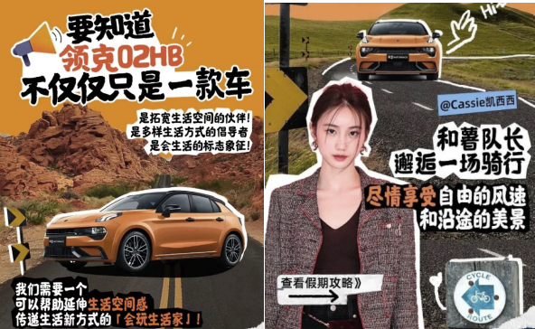
图9：领克与小红书KOL合作，走向年轻化
显著性策略
领克汽车在品牌建设中，充分发挥了网络数字化的优势。通过一系列创新的数字化营销策略和以用户为中心的服务生态，领克成功地提升了品牌在年轻消费者中的知名度和美誉度，彰显了其在汽车行业中的独特地位。
首先，在数字化营销实践中，领克汽车的投入成果显著。例如，80%的市场预算都投给了社交媒体，而不投资电视订阅、租赁等传统广告方式。在社交媒体上，领克汽车积极布局内容营销，如在Instagram和Facebook上发布年轻人市集、音乐节、纹身快闪店等线下活动的高光时刻，以及在TikTok上的“街访系列”内容，通过访谈引出人们对城市中交通现状的不满，进而说出汽车有96%的时间都在闲置的事实。
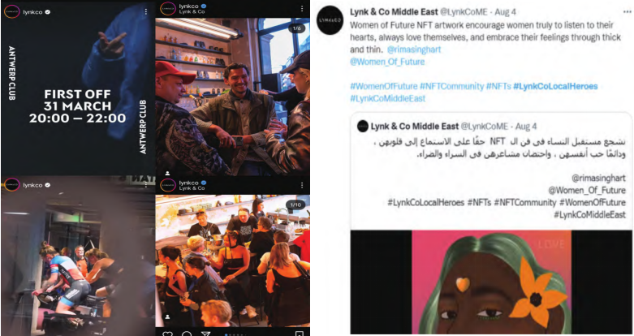
领克官号在海外社媒平台发布内容
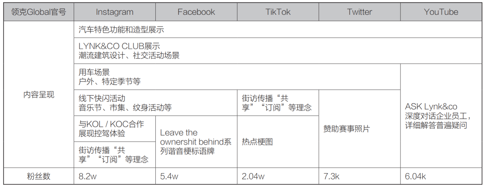
图11：领克海外社媒账号情况
此外，通过整合分散的数据，领克建立了完整的数据链，实现了对用户全生命周期数据的统一汇总，从而获取了精准的用户画像。以“订阅制”为例，截至2023年5月31日，领克已在欧洲拥有超过20万订阅用户，其中超过20%的用户积极参与了车辆共享。这些数据不仅反映了用户对订阅模式的认可，也为领克提供了宝贵的用户行为数据，以便更好地了解用户需求，优化产品和服务。
另一方面，领克汽车以用户为中心，构建了完善的服务生态。Co客社区、Co币生态、全国领地计划等一系列举措，为用户提供了全方位的服务。例如，Co:LAB社区平台为用户提供了一个开放的交流空间，用户可以在此分享用车经验、提出建议，并与其他车主互动。这种以用户为中心的社区建设，不仅增强了用户对品牌的忠诚度，也为领克提供了与用户直接沟通的渠道。
总之，领克汽车通过一系列精心策划的互联网品牌力塑造策略，成功地在全球市场上建立了一个有意义、差异化和显著性的品牌形象。从情感联系的建立到需求的满足，从技术与设计的领先到产品矩阵的多元化，再到数字化营销的实践和全链路数据生态的管理，领克汽车的每一步都体现了其对互联网时代品牌建设的深刻理解和创新实践。这些策略不仅加强了领克汽车的品牌力，也为其他企业提供了宝贵的参考，展示了在全球化竞争中，如何利用互联网打造和巩固品牌力的有效路径。随着领克汽车继续在全球市场上的拓展，其品牌力的塑造策略将继续成为其成功的关键因素。
领克的互联网品牌力策略成效分析
领克汽车的崛起，无疑是近年来中国汽车市场的一大亮点。其在短短几年内便取得了显著的市场成就，与之相伴的是其独树一帜的互联网营销策略。本节将深入剖析互联网营销策略在领克汽车品牌力塑造中的作用，并探讨其对品牌发展所产生的深远影响。
销量维度：快速增长趋势
领克汽车通过创新性的互联网营销策略，成功地塑造了年轻、时尚、科技的品牌形象，并在销量增长上取得了显著的市场成效。
领克汽车自上市以来，销量一直保持较高的增长势头。领克国际（欧洲）CEO魏思澜（Alain Visser）曾介绍说：“我们80%的市场预算都投给了社交媒体，同时完全不投电视或印刷品广告，广告牌的投放也很少。”领克凭借着自己的宣传，获得了一定的效果。
自2017年推出第一款车型以来，领克的销售一直在稳步上升，90后的消费者比例高达71%，创下了全球汽车品牌增长的新纪录，这也充分说明了领克在年轻消费者中的地位。领克汽车2023年全年销量为220250辆，同比增长22.27%，突破22万大关。从2017年12月到2023年12月，领克累计销量为1,050,841辆，向新势能持续跃升。2024年1-10月，领克汽车总销量为208,645台，刷新中国高端汽车品牌纪录，这充分证明了其强大的市场竞争力。
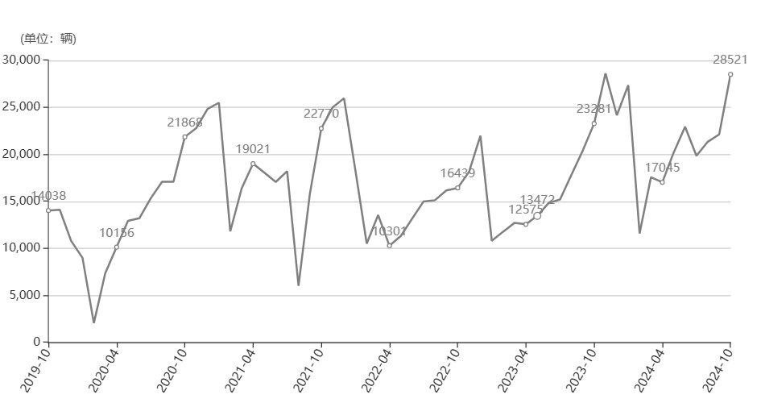
图12：领克2019-2024年销量增长趋势图
用户画像维度：精准定位，共创价值
领克汽车作为国内汽车市场的新兴力量，通过深入洞察用户需求，成功地打造了独具特色的品牌形象。领克汽车的用户画像呈现出鲜明的特征，这与其精准的品牌定位和成功的互联网营销策略密不可分。
第一，领克的用户呈现明显的年轻化特征。90后和Z世代是领克用户的主力军，占比接近40%。这一群体追求个性化、时尚化，对新事物充满好奇心，并乐于表达自我。作为数字时代的原住民，他们对互联网和社交媒体有着天然的亲近感，是社交网络上的活跃分子。领克品牌所倡导的年轻、活力、科技的形象，与Z世代的价值观高度契合。通过在社交媒体上发布个性化内容、组织线下潮流活动等方式，领克成功地与Z世代建立了深厚的情感连接。
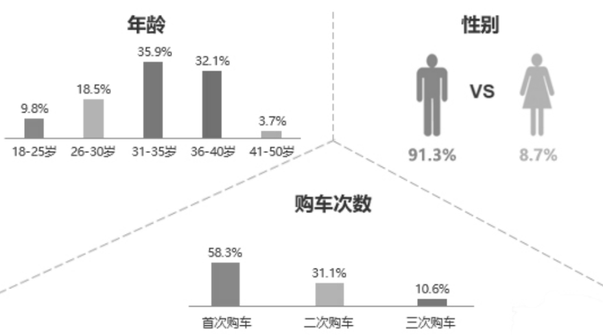
图13：2023年百名领克车主用户画像
第二，领克汽车成功吸引了一批高学历、高收入的消费者群体，这与其强调品质和科技的品牌定位密切相关。高学历人群通常对汽车的性能、配置和安全性有更深入的了解，他们更看重车辆的品质和科技含量，而领克汽车恰好能够满足这一群体的需求。同时，高收入人群具备较强的消费能力，愿意为高品质的产品和服务付费。领克品牌所传递的品质感和高端形象，与高学历、高收入人群的价值观高度契合，从而赢得了他们的认可。
第三，领克用户对智能科技有着极高的热情，他们乐于尝试新事物，并愿意为之付费。例如，领克用户对自动驾驶、智能辅助驾驶等技术表现出浓厚的兴趣，他们认为这些技术能够提升驾驶体验和安全性；用户也会积极使用车联网应用，享受智能互联带来的便利。
用户认可维度：品牌忠诚度高
领克汽车凭借其出色的产品力和用户体验，在消费者心中树立了良好的品牌形象，并培养了一批忠实的用户。 首先，领克汽车的用户口碑良好。领克汽车在各大汽车论坛（如汽车之家、懂车帝、车质网等）、社交媒体（如微博、小红书等）上拥有广泛的关注度，用户对车辆的颜值、配置、智能化等方面给予了高度评价。根据汽车之家、懂车帝等平台发布的车型口碑报告，领克车型在同级别车型中口碑排名靠前。例如，2023年，领克01在紧凑型SUV市场口碑评分一直保持在较高水平。
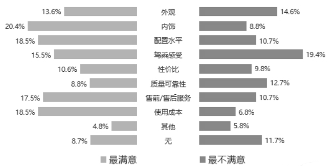
图14：2023年百名车主对领克汽车的评价
其次，领克汽车成功建立了强大的品牌忠诚度。根据领克官方发布的用户调研数据，高达71%的用户愿意向亲友推荐领克产品。这表明领克不仅满足了用户的基本需求，更在情感上与用户建立了深厚的连接。
第三，领克汽车的用户参与度高。领克积极鼓励用户参与品牌活动，打造了活跃的线上线下社区。例如，领克举办的“领克日”、用户共创活动等，都极大地增强了用户与品牌的互动。根据领克官方发布的数据，领克APP的月活跃用户数持续增长，用户在APP上参与讨论、分享用车体验的积极性很高。
总之，领克汽车通过出色的产品力、积极的品牌互动和优质的售后服务，成功赢得了用户的认可和信赖。良好的口碑、高品牌忠诚度和高用户参与度，共同构成了领克汽车的核心竞争力。领克的成功案例为其他汽车品牌提供了宝贵的经验，即只有不断提升产品质量、加强用户互动，才能在激烈的市场竞争中脱颖而出。
领克的互联网品牌力启示与结论
领克汽车在网络时代的品牌力塑造中，通过实现意义打造、差异化和提升显著性的策略，成功构建了强大的品牌力。其案例表明，网络时代下，企业需要利用数字化手段，以用户为中心，进行精准营销和品牌建设，以实现品牌的长期增长和市场竞争力的提升。领克汽车的成功实践为其他企业提供了宝贵的参考和启示。
启示
领克汽车的崛起，为传统汽车行业注入了新的活力，其成功背后蕴含着深刻的战略意义。通过对领克互联网品牌力打造策略的深入剖析，可以总结出以下几点启示：
第一，数字化转型是品牌成功的基石。领克汽车充分利用了数字化技术，实现了与年轻消费者的深度互动。通过社交媒体平台、大数据分析等手段，领克精准定位目标用户，并为其提供个性化的产品和服务。例如，领克通过分析用户在社交媒体上的评论和行为，及时调整营销策略，推出更符合用户需求的产品。数字化转型不仅提升了领克的市场响应速度，还增强了品牌与用户之间的黏性。
第二，以用户为中心是品牌发展的原动力。领克始终坚持以用户为中心，将用户需求放在首位。通过CO:LAB社区平台等互动形式，领克与用户建立了紧密的联系，共同参与到产品开发和品牌建设中。例如，领克通过用户共创的方式，设计了多款个性化的汽车配件，满足了用户的个性化需求。以用户为中心，不仅能提升用户满意度，还能激发用户的品牌忠诚度。
第三，差异化和创新是品牌突围的关键。领克通过差异化的产品和互联网营销策略，在竞争激烈的汽车市场中脱颖而出。例如，领克推出的“订阅制”模式，打破了传统的汽车销售模式，吸引了大批年轻消费者。此外，领克还通过不断创新，推出了一系列具有科技感和设计感的车型，满足了消费者对个性化和智能化的需求。
结语
领克的实践表明，互联网时代的品牌力构建，核心在于以用户为圆心，用“情感连接”打破同质化，以“差异创新”抢占心智，借“数字触点”深化认知。从订阅制模式到用户共创社区，从赛事营销到全球化布局，其每一步都紧扣“人”的需求——让品牌成为年轻群体的潮流符号、低碳出行的生活伙伴。
这场品牌突围留给行业的启示清晰而务实：在数字化浪潮中，企业需以用户价值为锚点，将技术优势转化为场景化体验，把全球视野融入本土化创新。领克的路径证明，当品牌建设超越单纯的营销技巧，真正扎根于用户生活方式与时代趋势，就能在全球化竞争中勾勒出属于中国品牌的成长轨迹——这或许就是其最珍贵的价值：以“人”为本的品牌力，永远是穿越周期的核心动能。
参考文献
[^1]柴田田.领克汽车品牌管理优化研究[D].云南师范大学,2023.DOI:10.27459/d.cnki.gynfc.2023.001447.
[^2]陈翰祺.领克用中国速度，在世界舞台建立了属于自己的王朝[N].汽车商报,2021-12-13(A07).DOI:10.43635/n.cnki.nqcsb.2021.000854.
[^3]仇磊.基于用户体验的互联网品牌构建与设计研究[D].江南大学,2020.DOI:10.27169/d.cnki.gwqgu.2020.001027.
[^4]丛沛霖.领克：有态度的车企出海创新者[J].国际品牌观察,2024,(Z2):40-45.
[^5]韩忠楠.新能源车出海现新模式领克欧洲“订阅制”会员超15万[N].证券时报,2022-10-14(A06).DOI:10.38329/n.cnki.nzjsb.2022.002603.
[^6]马岩.互联网品牌传播与品牌传播创新之研究[J].新媒体研究,2015,1(18):46-47.DOI:10.16604/j.cnki.issn2096-0360.2015.18.028.
[^7]肖逸思.领克魏思澜：进入欧洲汽车工业腹地，中国车企凭什么？[N].第一财经日报,2022-11-03(A09).DOI:10.28207/n.cnki.ndycj.2022.004443.
[^8]吴迎秋.关注中国品牌汽车高端化之路的“领克样本”[N].汽车商报,2021-11-01(A02).DOI:10.43635/n.cnki.nqcsb.2021.000810.
[^9]郑植文.领克出海：提升汽车运行时间“订阅制”值得尝试[N].21世纪经济报道,2022-12-06(012).DOI:10.28723/n.cnki.nsjbd.2022.005284.
[^10]Forstenhäusler P. Perceived Usability of Emerging Digital Peer-to-Peer Car Sharing Services: A Design Study on Lynk & Co[J]. 2022.
[^11]Gunnarsson I, Johansson S. Sustainable Business Model Innovation Within The Automotive Manufacturing Industry-A Comparative Case Study of Volvo Cars and Lynk & Co[J]. 2022.
[^12]Mingione M, Kashif M, Petrescu M. Brand power relationships: a co-evolutionary conceptual framework[J]. Journal of Relationship Marketing, 2020, 19(1): 1-28.
[^13]Provén C, Skoglund N. THE ROLE OF VALUE CREATION IN SUSTAINABLE PRODUCT SERVICE SYSTEM IMPLEMENTATION: A CASE STUDY ON LYNK & CO’S SUBSCRIPTION MODEL[J]. 2023.
[^14]Xia Y, Li M, Zhang J, et al. The Competitiveness Analysis of Geely Automobile Group[J]. International Journal of Advanced Culture Technology, 2024, 12(2): 402-408.